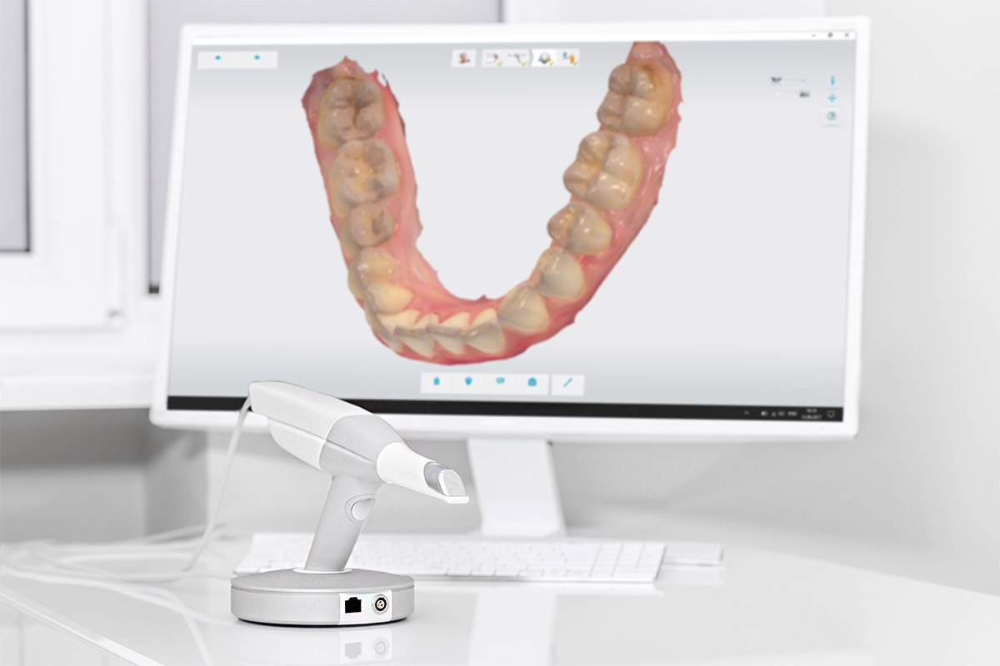

+20 Años de experiencia
Filosofía basada en la confianza, la profesionalidad y el trato individualizado según la necesidad de cada persona.
Con el escáner intraoral 3Shape TRIOS 3 registramos tu boca en 3D en pocos minutos, sin las incómodas pastas de impresión. Lo utilizamos en ortodoncia invisible, coronas, puentes y en el estudio de muchos tratamientos.
Llámanos y pide tu citaLos escaneos realistas en 3D y en color ayudan a los pacientes a comprender su situación dental y las opciones que tienen. Ves tu boca en la pantalla, igual que la ve el dentista.

Ya no son necesarios los registros con modelos de escayola para la elaboración de prótesis. Con un escaneado completo de la cavidad bucal que será enviado al laboratorio de prótesis, se obtiene un perfecto registro para la elaboración de todo tipo de prótesis, coronas o férulas.
Es posible realizar un seguimiento preciso de los cambios, para que puedas mostrarles exactamente por qué necesitan un determinado tratamiento. También se pueden generar simulaciones en 3D de los resultados de ortodoncia y crear una imagen de su posible sonrisa que el paciente puede llevarse y compartir con amigos y familiares.
Las impresiones tradicionales con pasta pueden resultar incómodas, sobre todo si tienes reflejo nauseoso. El escáner intraoral es una pequeña cámara que se pasa por los dientes y genera un modelo digital en 3D.
Es rápido, no produce radiación y, si hace falta repetir una zona, basta con volver a escanearla.
En ortodoncia invisible con Invisalign y Spark para planificar los alineadores, en coronas, puentes y prótesis, en implantes dentales y en estética dental.
También nos permite comparar la evolución de tu boca entre visitas.
No. Es una pequeña cámara que se desliza por los dientes sin necesidad de pastas ni moldes. La mayoría de los pacientes lo encuentra mucho más cómodo que las impresiones tradicionales.
Depende de la zona a registrar, pero suele resolverse en pocos minutos, y el resultado se ve en la pantalla al momento.
No. Funciona con luz, como una cámara, por lo que no utiliza rayos X.
Sí. El escaneo digital es el punto de partida para planificar los alineadores Invisalign y Spark y ver una simulación del tratamiento. Más información en ortodoncia invisible en Los Cristianos.
Estamos en Av. Juan Carlos I, 26, Edificio Guayero, locales 7, 8 y 9, 38650 Los Cristianos, con aparcamiento en el edificio. Atendemos a pacientes de Los Cristianos, Arona y todo el sur de Tenerife. Llámanos al 922 79 74 05.
Filosofía basada en la confianza, la profesionalidad y el trato individualizado según la necesidad de cada persona.
Además de un gran equipo médico y humano, nuestros centros disponen de la más alta tecnología para ofrecer la máxima calidad.
Nuestras instalaciones son modernas y cómodas, adaptadas para todo tipo de minusvalías, por eso están a pie de calle.
Si desea más información sobre nuestros servicios o solicitar una cita, póngase en contacto con nosotros.
cdguayero@gmail.com
Avda. Juan Carlos I, 26 –
Edificio Guayero, Locales 7, 8 y 9
38650 Los Cristianos
Lunes a Viernes de 10:00-19:00h